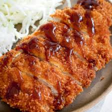

Chicken Katsu Recipe

Description
Chicken katsu is a Japanese-style fried chicken cutlet coated with crispy panko. Serve with hot rice and tonkatsu sauce for a restaurant-worthy dish.
Ingredients
- Chicken Breast
- Panko/Breadcrumbs
- Egg
- Flour
- Salt
- Pepper
- Oil
Procedure
- Hammer the chicken/pork.
- Season the chicken with salt and pepper.
- Put the chicken in flour, then in egg, and then in the breadcrumbs.
- Fry the chicken for 3-4 minutes until golden brown.
- Slice and serve.